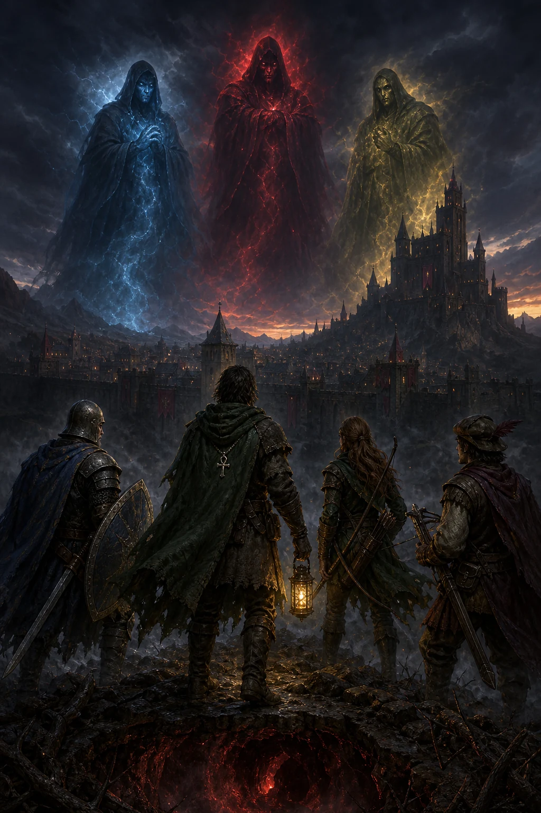

Lord British is lost below the world. Above, Blackthorn rules through compulsory virtue while the Shadowlords turn Britannia toward Falsehood, Hatred, and Cowardice. Reassemble the old fellowship and prepare a kingdom-wide resistance.
Surface and Underworld atlasPersistent liberation trackerSearchable resistance archives

The Shadowlords hold the realm. The resistance still stands.
The situation
A kingdom held in shadow
Lord British is trapped below the world. Above, the three Shadowlords bend cities toward Falsehood, Hatred, and Cowardice while Blackthorn's regime punishes virtue without choice.
“True virtue must be chosen—not imposed.”
Newly charted
Two complete worlds
The surface and Underworld are decoded from your original Ultima V data, with 73 searchable campaign locations.
The road ahead
Five Grand Quests to liberation
Your campaign progress will appear here.
Recommended setup
Play with a live mapping companion
Ultimapper 5 overlays a HUD and follows your position in DOSBox-based releases. Pair it with this guide's atlas for route planning.
Ask for a gentle hint, an efficient route, or a precise reminder when Britannia has you at an impasse.
✦
Lost in the Underworld, stumped by a puzzle, or unsure which quest to tackle next? Ask the seer for practical guidance grounded in Ultima V’s mechanics and quest flow.
Resistance roster
Build the Warriors of Destiny
Balance front-line strength, ranged pressure, and enough Intelligence to survive the Underworld. Select any recruit for a tactical assessment.
Potential companions
Choose a recruit
15 available
Companion Stat Comparison
A successful resistance needs a balanced team. While the tables below provide detailed stats, this chart offers a quick visual comparison to help you identify the strongest, smartest, or most agile companions for your party. Use the buttons to switch between attributes.
Potential Companions
Britannia is home to many who would join your cause, but choose wisely. A smaller, well-equipped party can be more efficient. Mages are invaluable, but some potential recruits may have ulterior motives. Use the search bar to find a specific companion or click the table headers to sort.
Name
Class
Lvl
STR
INT
DEX
Location
Campaign support
Expedition Readiness
Use these loadouts as departure gates, not as another walkthrough. The Grand Quest tells you where to go and in what order; this ledger only confirms what should be in hand before the next dangerous leg.
0 of 4
loadouts ready
Before Grand Quest 01.5
Castle Britannia raid
0/4 secured
Leave only when the upper-floor burglary can be completed in one controlled visit.
Before Grand Quest 02
Shrine and sea circuit
0/4 secured
Begin the pilgrimage after the resistance can cross terrain quickly and navigate without guesswork.
Short on gold? Capture a pirate frigate for free. The Jhelom fallback is about 600 gold before the Avatar’s Intelligence discount.
Before Grand Quests 03–04
Underworld sorties
0/5 secured
Treat every shard or regalia run as a self-contained expedition with a planned exit.
Before Grand Quest 05
Dungeon Doom
0/5 secured
Doom is a one-way commitment. Make the permanent save before crossing its threshold.
A loadout says when to leave; the Campaign says where to go.
Drawn from the original game data
Britannia, its cities, and the depths below
Explore both worlds, then enter every city, castle, keep, dwelling, and dungeon.
All 128 floor maps are decoded from the original Ultima V game data.
World layers
02
Interiors
40
Floor maps
128
Mapped sites
73
Britannia Surface
The Avatar's living journal
The Grand Quest
Build a mobile resistance first, then restore Britannia. Open Next steps beneath any objective for the exact route, supplies, dialogue, and escape plan.
0%0 route objectives complete
✦
Your next objective
Assemble the resistance party
Recruit the companions who make the opening route safer.
After the strategic opening
Optional Resistance Work
These pursuits are arranged by the point where they deliver the most value. Complete each group before its named Grand Quest when practical; none of them gate the campaign.
0%0 optional jobs complete
Campaign route
Choose the act you are preparing for
The active chapter, its preparation, and its walkthrough now travel together.
Act I: The Path of Virtue
Restoring the Shrines of the Eight Virtues is the primary way to increase your party's attributes and is required to learn the final Word of Power. Every shrine uses the same simple loop:
1) Learn the Mantra from NPCs in the virtue's city.
2) Meditate at the shrine using the mantra for three cycles.
3) Visit the Codex on the Isle of the Avatar (Underworld) to receive guidance.
4) Return & Complete by meditating again to gain stats.
Who to talk to for each Mantra
Honesty (Moonglow): Speak to Malifora → mantra AHM.
Compassion (Britain): Greyson (at the inn). Say BRITISH is the rightful ruler, then ask for the mantra of Compassion → MU.
Valor (Jhelom): Trian points you to Thorne → RA.
Justice (Yew): Give Jeremy money, then ask for info. He directs you to Chamfort (Resistance; password DAWN) → BEH.
Honor (Trinsic): Gruman shares it directly → SUMM.
Spirituality (Skara Brae): Saul sends you to Kindor. Ask Kindor about SHRINE and answer Y → OM.
Humility (New Magincia): Shirita sends you to Wartow. Answer his questions: BRITISH, N, N, N, Y → LUM.
Tip: Ask NPCs about MANTRA unless noted; some steps require the Resistance password DAWN.
Completing all eight shrine quests grants the Word of Power for Doom: VERAMOCOR.
Act II: Shatter the Shadows
The three Shadowlords cannot be beaten in normal combat. You must recover their shards from the Underworld and perform a banishment ritual at the castles of Truth, Love, and Courage.
Doom → Complete all eight shrine quests, then say VERAMOCOR at the entrance.
For the Shadowlord quests you need Deceit, one of Wrong/Covetous, and Hythloth. Others are helpful for the Amulet and the finale.
Step 2: Learn their true names
Faulinei (Falsehood)
Astaroth (Hatred)
Nosfentor (Cowardice)
You will shout these names at the appropriate sacred flames during the banishment ritual (see Step 3).
Step 3: Retrieve the three shards
Enter the dungeons using the Words of Power. Descend to the Underworld and reach each shard as noted:
Shard of Falsehood → Beneath Deceit (FALLAX). Underworld route trends west to a central isle across water; bring the Grappling Hook and Magic Carpet. (You can VAS REL POR out.)
Shard of Hatred → Beneath Wrong/Covetous (MALUM/AVIDUS). Use the Sceptre to dispel fields, and the Crown in heavy-magic rooms. The Underworld access from either dungeon leads to a winding southwest labyrinth.
Shard of Cowardice → Beneath Hythloth (IGNAVUS). Blink across mountain "rooms" with IN POR and use the Magic Carpet over swamps; the shard lies in a northeast clearing.
Step 4: Perform the banishment
Stand one tile south of the sacred flame, shout the Shadowlord's name, wait one turn, then use the corresponding shard as it stands on the flame:
Faulinei (Falsehood) → Lycaeum (Truth)
Astaroth (Hatred) → Empath Abbey (Love)
Nosfentor (Cowardice) → Serpent's Hold (Courage)
Act III: Recover the Regalia
With the Shadowlords gone, recover Lord British's artifacts. These make the Underworld and Doom manageable.
The Sceptre
Location:Stonegate (north of the east edge of Lock Lake / south of Minoc). How: Requires Grappling Hook, Skull Keys, and the Magic Carpet. Use a skull key on the center door, answer the demon's riddle (WELL), then outrun the Shadowlords on the carpet to grab the Sceptre and exit. Beware the fire pits.
Function: Dispels magical fields.
The Crown
Location: Rooftop of Blackthorn's Castle. How: From the entrance, ride the Magic Carpet and outrun the guards. Go up to L2 → L3 → rooftop, then skull key the center room, take the Crown, and fly off the roof to escape. Save frequently: being captured here can permanently erase a companion.
Function: Negates enemy magic.
The Amulet
Location: Underworld burial ground of Lord British's fallen knights. Quick route: Drop through the waterfall east of Skara Brae on the Magic Carpet, follow the river junctions (Down → Left → Down), circle the lake, go southeast through the swamp and mountain pass to the burial ground, and take the Amulet. Exit: cast VAS REL POR or intentionally die to return to the castle.
Function: Reveals the hidden entrance to Doom.
The Sandalwood Box
Location: Lord British's private study. How: Play "Stones" on the harpsichord (6-7-8-9-8-7-8-7-6-7-6-5-3) to reveal the secret room and claim the Box.
Function: Proves your identity to the king.
Act IV: The Final Descent into Doom
The final challenge. This is a one-way trip, so make a permanent save before you enter. Ensure you have all four royal artifacts and the Sandalwood Box, and that the Shadowlords are defeated.
Final Preparations
All 3 Shadowlords must be destroyed.
Possess the Sceptre, Crown, Amulet, and Sandalwood Box.
The Avatar at Level 8 is strongly recommended.
Stockpile healing potions and resurrection spells.
The Rescue
The entrance to Doom is in the central Underworld, hidden in darkness (use the Amulet). Speak the Word of Power VERAMOCOR to enter.
Use the Sceptre to dispel the ethereal walls at the entrance.
Navigate the labyrinthine levels, using the Crown to survive rooms filled with powerful magic-using monsters.
On the final level, find the hidden pit leading to Lord British's prison.
Lord British is trapped in a mirror. Step through and give him the Sandalwood Box to free him.
Use the Orb of the Moons he gives you to escape the collapsing dungeon.
Next required quest
Restore the Shrine of Honesty
Begin in Moonglow: learn AHM, meditate three cycles, and seek the Codex.
Full liberation ledger
Track the decisive objectives
Later quests unlock one at a time
Resistance opportunities
Side Quests
These jobs are optional and can be completed in any order. They make the ordered campaign safer, faster, and better supplied.
0%0 of 11 complete
Field reference
Britannian Archives
Search the grimoire, decode mantras and Words of Power, time the moongates, or skim hard-won campaign advice.
Spells
17
Virtues
8
Field notes
20
Complete Spellbook
Magic is cast from prepared reagents and consumes Magic Points. A character's level determines the highest circle of spells they can cast. Use the search to quickly find a spell.
Spell Name
Circle
Effect
Reagents
Mantras & Words of Power
These "passwords" are essential for progressing through the game. Mantras are used at the Shrines of Virtue, while Words of Power unlock the dungeons.
Virtue
Mantra
Dungeon
Word of Power
Common Player Tips
Moongate Phases (Gate Travel)
Casting VAS REL POR opens a gate to any moongate based on the current moon phase. Use a pocket watch to time your arrival.
Phase
Destination
Notes: Based on Ultima V moongate order seen in-game and the walkthrough’s examples (e.g., Phase 1 → Moonglow, Phase 2 → Britain, Phase 4 → Yew, Phase 5 → Minoc, Phase 6 → Trinsic, Phase 8 → New Magincia).